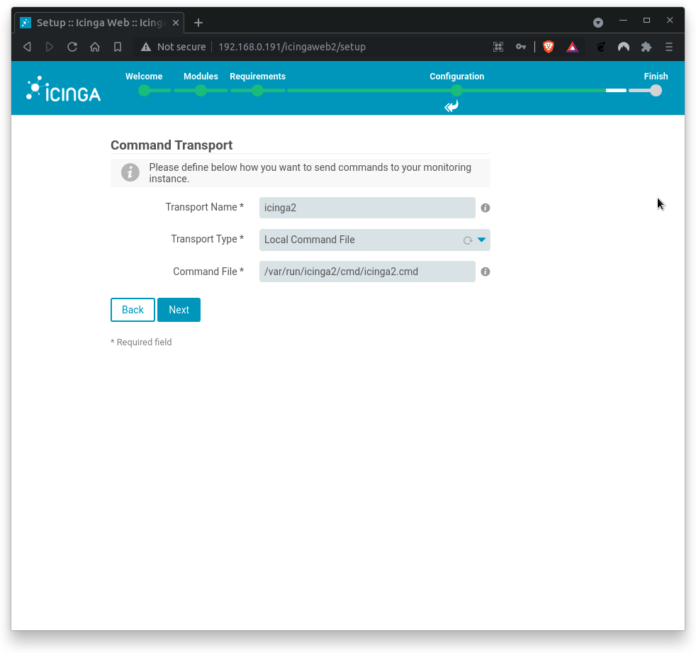
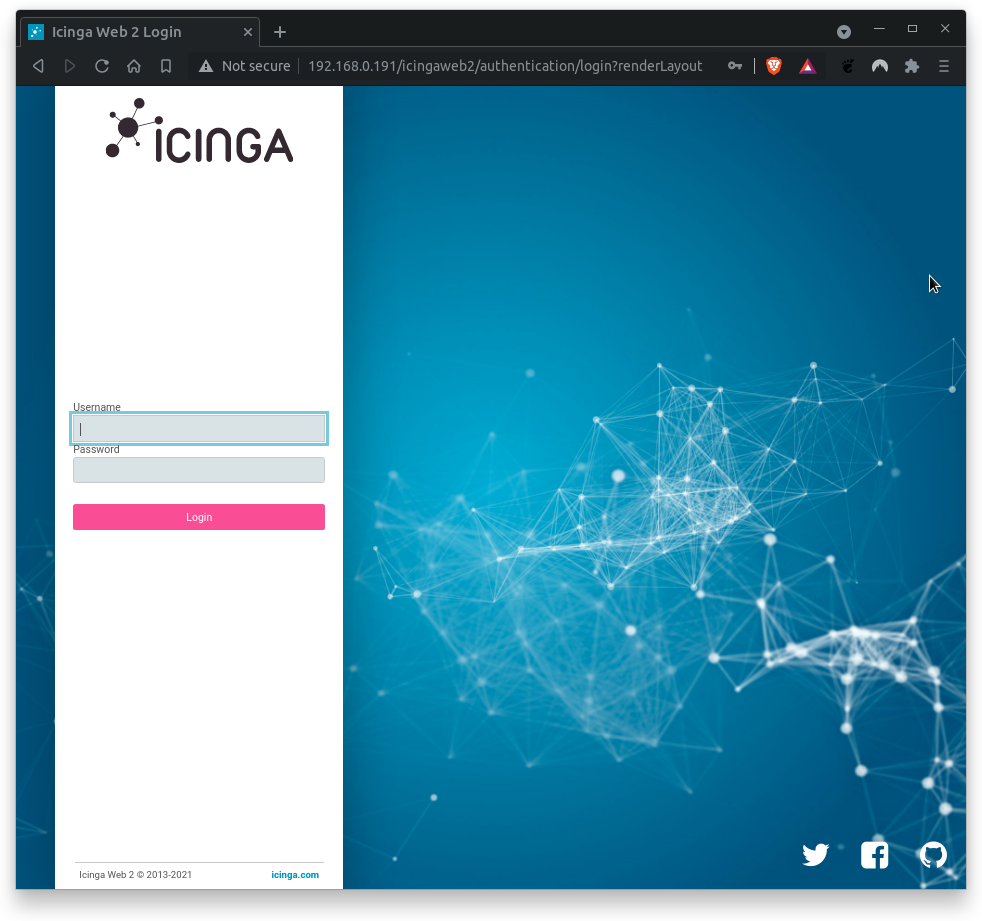

What You'll Learn
In this codelab you will learn
- how to install Icinga2 on Debian
- how to configure Icinga2 as a single node
Where You Can Look Up
The best source of documentation is the homepage of Icinga2. The latest documentation can be found here.
What You'll need
Guest operation system (Guest OS)
This is the OS of the virtual machine. This will be Debian .
Administators privileges
By default, administrator privileges are required on the Host OS to install additional software. Make sure that you have the required permissions.
For the Guest OS, you will create and manage your own users. These users will therefore be different from the Host's user administration.
Root privileges via sudo
In this codelab you have to work with root privileges. Therefore, a few words of caution: double check whatever you type and make backups whenever necessary.
Working with root privileges is quite easy. Open a terminal (a shell) and enter the following commmand:
sudo -s
Enter the password of the icinga user and voila:
root@server:/home/icinga#
As soon as you are root via sudo, it is no longer necessary to precede the sudo command. Instead of sudo ls -lisa /root/ you can also type ls -lisa /root/ because you have root privileges already. However, all commands in this codelab will always start with sudo to remind you that you are working with root privileges.
Description
Run the following commands to update your system package repositories and your system.
sudo apt update
sudo apt upgrade
Depending on the package upgrades, it is useful to restart the system here.
Core App
Now that Icinga 2 repos are available, you can install Icinga core by running the command below:
sudo apt install icinga2
During installation, the apt command displays the following information.
--- more ---
enabling default icinga2 features
Enabling feature checker. Make sure to restart Icinga 2 for these changes to take effect.
Enabling feature notification. Make sure to restart Icinga 2 for these changes to take effect.
Enabling feature mainlog. Make sure to restart Icinga 2 for these changes to take effect.
--- more ---
On Debian, Icinga2 is started and activated during installation. You can check this by executing the command:
systemctl status icinga2
Sample output:
icinga2.service - Icinga host/service/network monitoring system
Loaded: loaded (/lib/systemd/system/icinga2.service; enabled; vendor preset: enabled)
Active: active (running) since Wed 2021-10-16 22:05:17 CET; 35min ago
Docs: https://icinga.com/docs/icinga2/latest/
Process: 9826 ExecStartPre=/usr/lib/icinga2/prepare-dirs /usr/lib/icinga2/icinga2 (code=exited, status=0/SUCCESS)
Main PID: 9831 (icinga2)
Tasks: 18 (limit: 2324)
Memory: 12.5M
CPU: 3.207s
CGroup: /system.slice/icinga2.service
├─9831 /usr/lib/x86_64-linux-gnu/icinga2/sbin/icinga2 --no-stack-rlimit daemon -e
├─9851 /usr/lib/x86_64-linux-gnu/icinga2/sbin/icinga2 --no-stack-rlimit daemon -e
└─9856 /usr/lib/x86_64-linux-gnu/icinga2/sbin/icinga2 --no-stack-rlimit daemon -e
Oct 16 22:30:47 server icinga2[9851]: [2021-10-16 22:30:47 +0100] information/IdoMysqlConnection: Pending queries: 5 (Input: 3/s; Output: 3/s)
Oct 16 22:35:17 server icinga2[9851]: [2021-10-16 22:35:17 +0100] information/ConfigObject: Dumping program state to file '/var/lib/icinga2/icinga2.state'
Oct 16 22:35:37 server icinga2[9851]: [2021-10-16 22:35:37 +0100] information/WorkQueue: #6 (ApiListener, RelayQueue) items: 0, rate: 0/s (0/min 0/5min 0/15min);
Oct 16 22:35:37 server icinga2[9851]: [2021-10-16 22:35:37 +0100] information/WorkQueue: #7 (ApiListener, SyncQueue) items: 0, rate: 0/s (0/min 0/5min 0/15min);
Oct 16 22:35:47 server icinga2[9851]: [2021-10-16 22:35:47 +0100] information/IdoMysqlConnection: Pending queries: 0 (Input: 3/s; Output: 3/s)
Oct 16 22:39:07 server icinga2[9851]: [2021-10-16 22:39:07 +0100] information/IdoMysqlConnection: Pending queries: 11 (Input: 3/s; Output: 2/s)
Oct 16 22:40:17 server icinga2[9851]: [2021-10-16 22:40:17 +0100] information/ConfigObject: Dumping program state to file '/var/lib/icinga2/icinga2.state'
Oct 16 22:40:37 server icinga2[9851]: [2021-10-16 22:40:37 +0100] information/WorkQueue: #6 (ApiListener, RelayQueue) items: 0, rate: 0/s (0/min 0/5min 0/15min);
Oct 16 22:40:37 server icinga2[9851]: [2021-10-16 22:40:37 +0100] information/WorkQueue: #7 (ApiListener, SyncQueue) items: 0, rate: 0/s (0/min 0/5min 0/15min);
Oct 16 22:40:47 server icinga2[9851]: [2021-10-16 22:40:47 +0100] information/IdoMysqlConnection: Pending queries: 0 (Input: 3/s; Output: 4/s)
Check if the status Active is in running mode which indicates that the service is up and running.
Monitoring Plugins
Icinga 2 also requires additional monitoring plugins to check external services. Execute the command below to install the plugins:
sudo apt install monitoring-plugins
Database installation
Icinga 2 requires a database as backend. In this codelab, we will install and use MariaDB server. Let's begin:
sudo apt update
sudo apt install mariadb-server mariadb-client
After installation, check the status of the MariaDB service with the following command:
sudo systemctl status mariadb
Sample output
root@server:~# systemctl status mariadb
● mariadb.service - MariaDB 10.6.4 database server
Loaded: loaded (/lib/systemd/system/mariadb.service; enabled; vendor preset: enabled)
Drop-In: /etc/systemd/system/mariadb.service.d
└─migrated-from-my.cnf-settings.conf
Active: active (running) since Sat 2021-10-16 21:43:23 CEST; 34s ago
Docs: man:mariadbd(8)
https://mariadb.com/kb/en/library/systemd/
Process: 25828 ExecStartPre=/usr/bin/install -m 755 -o mysql -g root -d /var/run/mysqld (code=>
Process: 25829 ExecStartPre=/bin/sh -c systemctl unset-environment _WSREP_START_POSITION (code>
Process: 25832 ExecStartPre=/bin/sh -c [ ! -e /usr/bin/galera_recovery ] && VAR= || VAR=`cd >
Process: 25895 ExecStartPost=/bin/sh -c systemctl unset-environment _WSREP_START_POSITION (cod>
Process: 25897 ExecStartPost=/etc/mysql/debian-start (code=exited, status=0/SUCCESS)
Main PID: 25881 (mariadbd)
Status: "Taking your SQL requests now..."
Tasks: 12 (limit: 4658)
Memory: 72.0M
CPU: 1.103s
CGroup: /system.slice/mariadb.service
└─25881 /usr/sbin/mariadbd
Oct 16 22:43:29 server /etc/mysql/debian-start[25902]: Phase 6/7: Checking and upgrading tables
Oct 16 22:43:29 server /etc/mysql/debian-start[25902]: Processing databases
Oct 16 22:43:29 server /etc/mysql/debian-start[25902]: information_schema
Oct 16 22:43:29 server /etc/mysql/debian-start[25902]: performance_schema
Oct 16 22:43:29 server /etc/mysql/debian-start[25902]: sys
Oct 16 22:43:29 server /etc/mysql/debian-start[25902]: sys.sys_config >
Oct 16 22:43:29 server /etc/mysql/debian-start[25902]: Phase 7/7: Running 'FLUSH PRIVILEGES'
Oct 16 22:43:29 server /etc/mysql/debian-start[25902]: OK
Oct 16 22:43:29 server /etc/mysql/debian-start[26501]: Checking for insecure root accounts.
Please check the follwing lines:
Loaded: loaded (/lib/systemd/system/mariadb.service; enabled; vendor preset: enabled)
...
Active: active (running) since Sat 2021-10-16 21:43:23 CEST; 34s ago
If MariaDB is not up and running, start MariaDB manually and enable the service with the following commands:
sudo systemctl start mariadb
sudo systemctl enable mariadb
Afterwards, check the status of the MariaDB service again:
sudo systemctl status mariadb
Contratulations, you have successfully installed MariaDB 10.5 on Debian. Great job!
IDO modules for MariaDB/MySQL
The package icinga2-ido-mysql provides Icinga Data Output (IDO) modules for MySQL and can be installed by running the command below:
sudo apt install icinga2-ido-mysql
During installation, you will be prompted to specify whether Icinga 2 should use MySQL. Select Yes to enable this feature. 
Next, you will be asked to specify whether database should be configured with dbconfig-common. Select Yes to enable dbconfig-common. 
Next, you will be asked to provide MySQL application password for icinga2-ido-mysql as shown in the following screen. To keep things easy, use icinga2 as password.

You have to repeat the password. Type icinga2 again and hit ENTER.

Finally, you can check wether ido-mysql feature is enabled. Run the command:
sudo icinga2 feature list
The command above lists both disabled and enabled features:
Disabled features: api command compatlog debuglog elasticsearch gelf graphite icingadb ido-mysql influxdb livestatus opentsdb perfdata statusdata syslog
Enabled features: checker mainlog notification
Typically, only the checker mainlog notification functions are activated, while the ido-mysql function is deactivated.
Enable the feature ido-mysql with the following command:
sudo icinga2 feature enable ido-mysql
Check the status of the ido-mysql feature by runnning the following command again:
sudo icinga2 feature list
The feature ido-mysql is now activated:
Disabled features: api command compatlog debuglog elasticsearch gelf graphite icingadb influxdb livestatus opentsdb perfdata statusdata syslog
Enabled features: checker ido-mysql mainlog notification
Great, everything done correctly. Now restart Icinga 2 and check its status.
sudo systemctl restart icinga2
sudo systemctl status icinga2
Next, open Icinga 2 MySQL IDO configuration file and set the Icinga2 database connection details.
sudo nano /etc/icinga2/features-available/ido-mysql.conf
The configuration must look like this:
/**
* The db_ido_mysql library implements IDO functionality
* for MySQL.
*/
library "db_ido_mysql"
object IdoMysqlConnection "ido-mysql" {
user = "icinga2",
password = "icinga2",
host = "localhost",
database = "icinga2"
}
Double-check the content of this file. Enter the connection details of the Icinga2 database manually if required.
Exit the editor with CTRL-X. If necessary, confirm with "y" if you have changed something in the configuration file.
One-liner
If you have modified the file /etc/icinga2/features-available/ido-mysql.conf in the previous section, restart the Icinga2 service and check its status again:
sudo systemctl restart icinga2
sudo systemctl status icinga2
Installation
Icinga Web 2 requires Icinga 2 with IDO configured as well as some additional requirements such as a web server, PHP and some extensions. You must therefore install these requirements first before configuring the front end. Let's start with the core frontend:
sudo apt install icingaweb2
Authentication Token
Icinga web setup requires authentication with a token. Generate the auth token:
sudo icingacli setup token create
Sample output:
The newly generated setup token is: **7fb3fb0cbae252b3**
No need to remember the token. Use the following command to display the token on screen:
sudo icingacli setup token show
Next, make sure that the Icinga Web 2 system group exists. Also make sure that the web server user www-data is a member of this group.
sudo id www-data
Sample output:
uid=33(www-data) gid=33(www-data) groups=33(www-data),117(icingaweb2)
Restart Apache Web Server
Restart the web server to apply all changes:
sudo systemctl restart apache2
sudo systemctl status apache2
Database installation
Sorry but true: you have to create another database and a db user for Icinga web 2. But this time, you will do this manually.
First, log in to MariaDB shell with the following command:
sudo mysql -u root -p
Provide your root password (or simple press enter) and create a database and a user for Icinga web 2 with the following command:
Run the following command to get a list of databases installed.
show databases;
Sample output:
Welcome to the MariaDB monitor. Commands end with ; or \g.
Your MariaDB connection id is 43
Server version: 10.11.4-MariaDB-1~deb12u1 Debian 12
Copyright (c) 2000, 2018, Oracle, MariaDB Corporation Ab and others.
Type 'help;' or '\h' for help. Type '\c' to clear the current input statement.
MariaDB [(none)]> show databases;
+--------------------+
| Database |
+--------------------+
| icinga2 |
| information_schema |
| mysql |
| performance_schema |
| sys |
+--------------------+
5 rows in set (0.001 sec)
MariaDB [(none)]>
Notice the database named icinga2. This is the database of the Icinga2 core system. Now, we need an additional database for the Icinga Web2 Frontend.
Now, run the following command to create the new database for Icinga Web2:
create database icingaweb2;
MariaDB/MySQL answers with:
Query OK, 1 row affected (0.001 sec)
Next, create the Icinga 2 database user. Remember, we want to keep things easy.
grant all on icingaweb2.* to icingaweb2@localhost identified by 'icingaweb2';
MariaDB/MySQL answers with:
Query OK, o row affected (0.001 sec)
Just be be sure: Execute the following command and check whether the new database exists:
show databases;
Sample output:
+--------------------+
| Database |
+--------------------+
| icinga2 |
| icingaweb2 |
| information_schema |
| mysql |
| performance_schema |
| sys |
+--------------------+
Next, check if the newly created user exists:
select user from mysql.user;
Sample output:
+-------------+
| User |
+-------------+
| icinga2 |
| icingaweb2 |
| mariadb.sys |
| mysql |
| root |
+-------------+
Everything okay? Good. Now reload privileges tables with the following commands:
flush privileges;
quit
That's it. Mission accomplished!
Setup Wizard
To access the setup wizard, use the following address:
http://<icinga-server-ip>/icingaweb2/
The Welcome wizard shows up.

Enter your authentication token and click Next to proceed. If you do not know the authentication token, run the following command again:
sudo icingacli setup token show
On the next page, you can select the Icinga modules you want to activate.

Ensure that Monitoring module is activated only. If true, click on Next.
The following page verifies wether the required PHP extensions meet the requirements. In case of missing PHP extensions, install them and proceed with setup.

As you can see, only the PHP extensions for PostgreSQL are missing. This is fine, as we use MySQL/MariaDB. All otherPHP modules are available. Great!
Click on Next to proceed.
Next, you need to configure the Icinga Web 2 authentication method. Since this Codelab uses local authentication only, select Database.

Click on Next to proceed.
Next, configure database authentication details as described below.

Where
Database Name= icingaweb2Usermame= icingaweb2Password= icingaweb2
Click on Validate Configuration to test the db connectivity. You should get a positive feedback (configuration bas been successfully validated). If errors occur, check on typos.

Click on Next when done.
Next, set up the Icinga web 2 authentication backend name.

Where
Backend Name= icingaweb2
Click on Next when backend name is correct.
Next, set up the Icinga Web 2 administrative user.

Where
Username= icinga2Password= icinga2Repeat Password= icinga2
Click on Next when done.
Next, configure application and logging related options.

Where
Show Stacktraces= yesShow Application State Messages= yesUser Preference Storage Type= DatabaseLogging Type= SyslogLogging Level= ErrorApplication Prefix= icingaweb2Facility= user
Click on Next when done.
Next, the Icinga Web 2 configuration summary shows up.

Double-check the summary. Click on Next when done.
On the next screen, another configuration section for Icinga Web 2 monitoring module welcomes you.

Click on Next when done.
Next, fill out the connection details to access the IDO database of the monitoring environment.

Where,
Database Name= icinga2Username= icinga2Password= icinga2
You should (hopefully) get a positive feedback.

If errors occur, check on typos.
Click on Next when done.
Next, define how you want to send commands to you monitoring environment. In this codelab, we are setting up Local Command File transport type.

Where,
Transport name= icinga2Transport type= Local Command FileCommand File= /var/run/icinga2/cmd/icinga2.cmd
Click on Next when done.
Next, fill out the settings to protect your monitoring environment against prying eyes.

Where,
Protected Custom Variables= *pw*,*pass*,community
Click on Next when done.
Finally, review the configuration summary and click Finish to complete the installation.

Congratulations, you have installed and set up Icinga2 successfully. Click on Login to Icinga Web 2

Enter the username and password from the previous section.

If URL is unknown, try this:
http://<icinga-server-ip>/icingaweb2/
After logging in, Icinga2 will greet you with one or more critical messages:

Congratulations! You have successfully installed Icinga2 and Icingaweb2 on your GuestOS. You can now browse through the sidebar menu to discover the features of Icinga2. Familiarize yourself with the menu navigation.